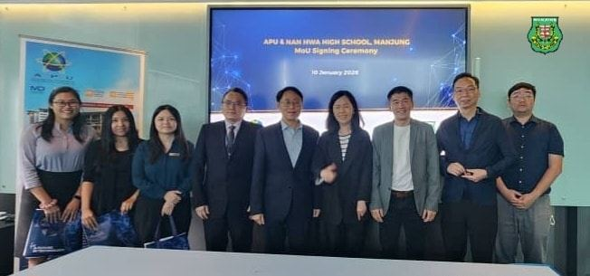
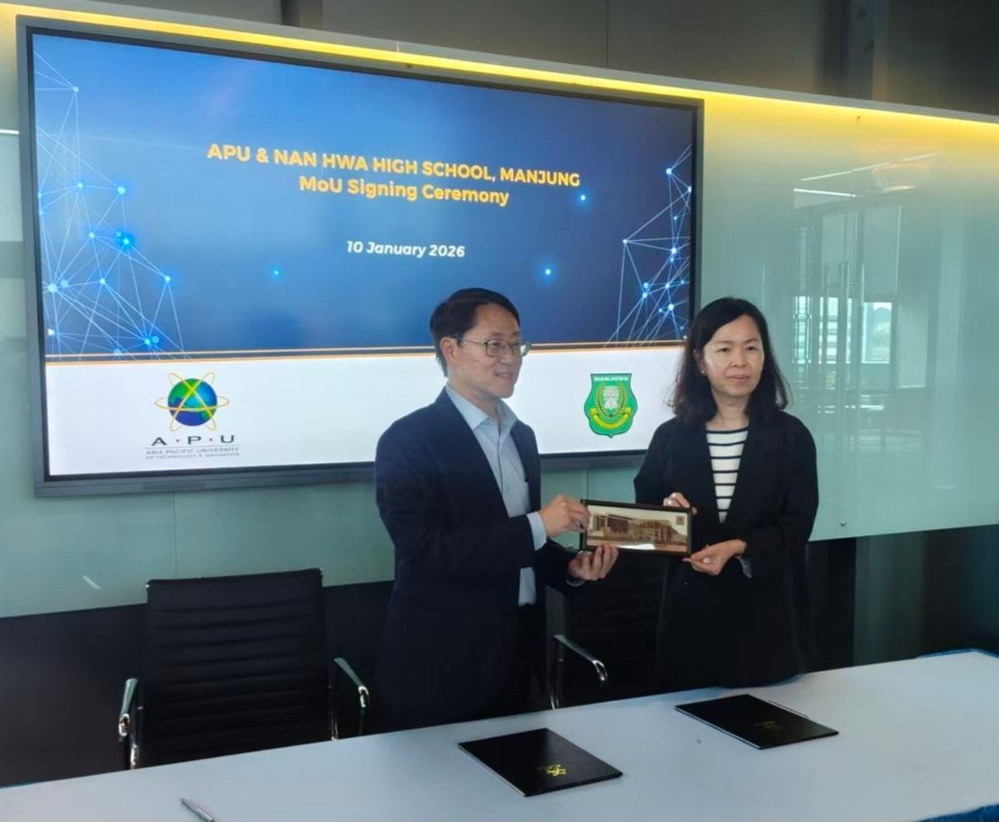
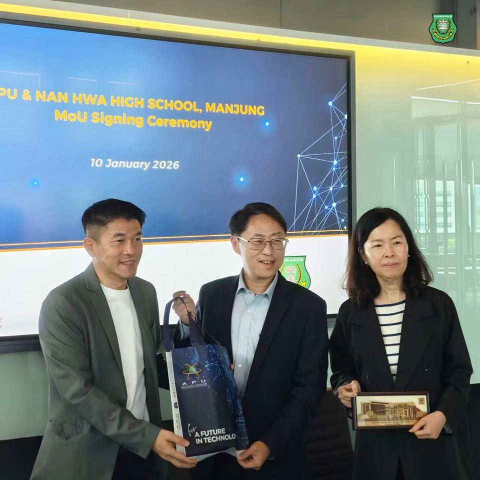
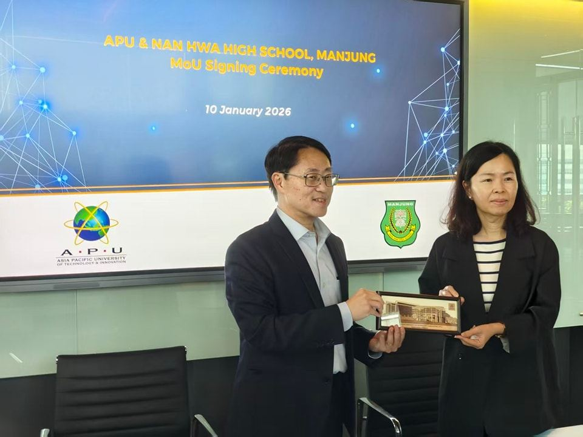

南华独中赴 APU 签署合作备忘录
南华独中赴 APU 签署合作备忘录
全面对接未来人才培养体系
曼绒南华独立中学与 亚太科技大学（APU）于2026年1月10日正式在亚太科技大学校园签署合作备忘录（MOU）。此举标志着双方兑现去年11月双方共商的“教育合作项目”口头共识并转化为合作契约，双方借此确立与课程、师训及技职教育上的深层对接机制。
此合作备忘录在南华独中董事副总务拿督黄思贤及APU副校长 Dr. Thang Ka Fei与注册主任Dr. Teh Choon Jin的见证下，由南华独中校长陈丽冰博士与APU副校长Prof Dr Ho Chin Kuan正式落笔签署，开启两校合作新纪元。
校长陈丽冰博士表示，能在 2026 年伊始完成这项重要签约，对南华独中而言意义非凡。她认为，教育者的职责是在变迁中寻找不变的价值。 “科技为帆，人文为根，APU代表数字时代的高效与专业，而南华独中寄望人文教育为学子带来温度与厚度。签署MOU不是为了盲目追逐科技，而是为了让学生在掌握先进工具的同时，依然能在传统文化中找到自己的根。”
随着签署合作备忘录礼成，双方将即刻启动细节对接。未来的合作将不再停留在交流层面，而是转化为可量化的行动，包括共同开发 AI 智能体辅助教学、酒店管理实训基地的资源共享，以及为南华教师量身打造的科技赋能培训。这不仅是一次校与校的合作，更是南华独中在“文化”与“科技”交汇处，为孩子们搭建一座往返科技与人文之间的桥梁，引导学生科技知识与人文关怀的兼容汲取。
随行人员包括有南华独中教务处杨秀珍主任、技职教育中心赖静绣主任、训导处李淑桦主任以及电脑与资讯处黄冠铭主任。



